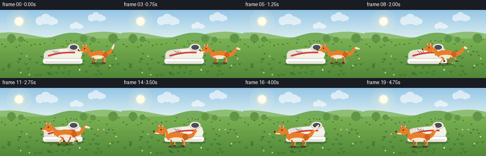
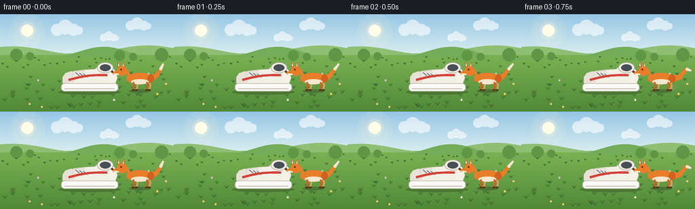

CODING AGENTS AS PIXEL WORLD MODELS
traex/Seed-2.1-Pro-0915 · dynamic_spatial_relationship_0030
点击播放 · 原生 RGB 像素
逐轮保存的候选
回放视频、检查图与代码变化。
每份候选均可单独播放。实际图片检查记录在下方工具轨迹中。
候选 01播放与检查图
点击播放 · 原生 RGB 像素


展开代码变化
--- 上一保存版本
+++ 本次保存版本
@@ -0,0 +1,354 @@
+"""Text-to-video: a fox is on the right of a shoe, then runs to the front.
+
+Renders 20 frames at 256x144 (4 fps). All geometry is procedural (PIL/numpy),
+drawn at 4x supersampling and downscaled for smooth anti-aliased edges.
+"""
+import math
+import random
+
+import numpy as np
+from PIL import Image, ImageDraw
+
+import artifact_io
+
+W, H, N, FPS = 256, 144, 20, 4.0
+SS = 4 # supersampling factor
+
+# Fixed placement of the shoe (toe points to screen-left).
+SHOE_X, SHOE_BASE = 132, 112
+# Fox path: starts clearly to the right of the shoe, ends in front of its toe
+# (lower on screen = closer to the camera, slightly larger).
+START = (206, 112, 1.00)
+END = (114, 124, 1.16)
+
+
+# ---------------------------------------------------------------- background
+
+def build_background():
+ kw, kh = W * SS, H * SS
+ horizon = int(58 * SS)
+ top = np.array([150, 198, 230], dtype=np.float32)
+ bot = np.array([216, 237, 239], dtype=np.float32)
+ gt = np.array([124, 179, 83], dtype=np.float32)
+ gb = np.array([80, 136, 56], dtype=np.float32)
+
+ arr = np.zeros((kh, kw, 3), dtype=np.float32)
+ ys = np.arange(horizon)[:, None]
+ t = ys / horizon
+ arr[:horizon] = top * (1 - t[:, None]) + bot * t[:, None]
+ ys = np.arange(horizon, kh)[:, None]
+ t = (ys - horizon) / (kh - horizon)
+ arr[horizon:] = gt * (1 - t[:, None]) + gb * t[:, None]
+
+ img = Image.fromarray(arr.astype(np.uint8)).convert("RGBA")
+ layer = Image.new("RGBA", (kw, kh), (0, 0, 0, 0))
+ d = ImageDraw.Draw(layer)
+
+ def circ(cx, cy, r, color):
+ d.ellipse([(cx - r) * SS, (cy - r) * SS, (cx + r) * SS, (cy + r) * SS], fill=color)
+
+ # Sun with soft glow.
+ for r, a in ((26, 26), (19, 40), (13, 90)):
+ circ(40, 24, r, (255, 247, 214, a))
+ circ(40, 24, 9, (255, 252, 232, 255))
+
+ # Soft clouds.
+ for cx, cy, s in ((96, 22, 1.0), (202, 16, 0.8), (160, 34, 0.6)):
+ for dx, dy, r in ((-12, 1, 9), (0, -3, 11), (12, 1, 9), (20, 2, 6)):
+ circ(cx + dx * s, cy + dy * s, r * s, (255, 255, 255, 150))
+
+ img = Image.alpha_composite(img, layer).convert("RGB")
+ d = ImageDraw.Draw(img)
+
+ def poly(points, color):
+ d.polygon([(x * SS, y * SS) for x, y in points], fill=color)
+
+ # Layered distant hills.
+ far = [(0, 60)]
+ for x in range(0, W + 1, 8):
+ far.append((x, 55 - 7 * math.sin(x * 0.030 + 1.2) - 3 * math.sin(x * 0.011)))
+ far += [(W, 60)]
+ poly(far, (143, 190, 116))
+
+ near = [(0, 64)]
+ for x in range(0, W + 1, 8):
+ near.append((x, 60 - 9 * math.sin(x * 0.026 + 4.0) - 3 * math.sin(x * 0.05)))
+ near += [(W, 64)]
+ poly(near, (116, 172, 90))
+
+ # Horizon bushes.
+ for bx, by, r in ((24, 60, 9), (44, 62, 6), (176, 61, 8), (196, 63, 6), (238, 60, 10)):
+ d.ellipse([(bx - r) * SS, (by - r) * SS, (bx + r) * SS, (by + r) * SS], fill=(96, 150, 70))
+
+ # Grass tufts and a few tiny flowers, fixed by seed.
+ rng = random.Random(7)
+ for _ in range(80):
+ x = rng.uniform(4, W - 4)
+ y = rng.uniform(62, 142)
+ depth = (y - 58) / 86.0
+ blade = 1.5 + depth * 3.5
+ c = (60 + rng.randint(-8, 8), 108 + rng.randint(-10, 10), 44)
+ for k in range(3):
+ dx = (k - 1) * blade * 0.8
+ d.line([(x * SS, y * SS), ((x + dx) * SS, (y - blade) * SS)],
+ fill=c, width=max(1, int(0.8 * SS)))
+ for _ in range(9):
+ x = rng.uniform(10, W - 10)
+ y = rng.uniform(78, 140)
+ petal = rng.choice([(245, 240, 220), (240, 214, 110), (232, 190, 205)])
+ r = 1.4
+ d.ellipse([(x - r) * SS, (y - r) * SS, (x + r) * SS, (y + r) * SS], fill=petal)
+
+ return img
+
+
+# -------------------------------------------------------------------- shoe
+
+def draw_shoe(layer):
+ d = ImageDraw.Draw(layer)
+ cx, base = SHOE_X, SHOE_BASE
+
+ def ell(box, fill, outline=None, width=1):
+ d.ellipse([int(v * SS) for v in box], fill=fill, outline=outline,
+ width=max(1, int(width * SS)))
+
+ def poly(points, fill, outline=None):
+ d.polygon([(int(x * SS), int(y * SS)) for x, y in points], fill=fill, outline=outline)
+
+ def line(points, fill, width):
+ d.line([(int(x * SS), int(y * SS)) for x, y in points], fill=fill,
+ width=max(1, int(width * SS)), joint="curve")
+
+ # Contact shadow.
+ ell((cx - 46, base - 1, cx + 46, base + 7), (30, 40, 25, 70))
+
+ upper_col = (243, 240, 230, 255)
+ edge_col = (180, 176, 164, 255)
+
+ # Upper silhouette (toe on the left).
+ upper = [
+ (cx - 40, base - 10), (cx - 39, base - 18), (cx - 34, base - 24),
+ (cx - 24, base - 28), (cx - 8, base - 30), (cx + 8, base - 31),
+ (cx + 16, base - 39), (cx + 30, base - 37), (cx + 38, base - 28),
+ (cx + 41, base - 18), (cx + 38, base - 10),
+ ]
+ poly(upper, upper_col, edge_col)
+
+ # Toe cap.
+ toe = [(cx - 40, base - 10), (cx - 40, base - 19), (cx - 36, base - 25),
+ (cx - 27, base - 28), (cx - 21, base - 24), (cx - 23, base - 12)]
+ poly(toe, (230, 226, 214, 255), edge_col)
+
+ # Heel collar with white padding ring.
+ ell((cx + 11, base - 41, cx + 35, base - 25), upper_col, edge_col)
+ ell((cx + 15, base - 38, cx + 31, base - 28), (74, 79, 88, 255))
+
+ # Tongue and laces.
+ tongue = [(cx - 25, base - 27), (cx - 8, base - 29), (cx - 10, base - 18),
+ (cx - 23, base - 17)]
+ poly(tongue, (233, 229, 219, 255), edge_col)
+ for k in range(3):
+ lx = cx - 21 + k * 6
+ line([(lx, base - 26 + k), (lx + 6, base - 21 + k)], (110, 114, 122, 255), 1.4)
+
+ # Side accent stripe.
+ stripe = []
+ for q in np.linspace(0, 1, 14):
+ sx = cx - 31 + 57 * q
+ sy = base - 15 - 7 * q - 2.5 * math.sin(math.pi * q)
+ stripe.append((sx, sy))
+ line(stripe, (210, 66, 58, 255), 3.6)
+
+ # Sole.
+ d.rounded_rectangle(
+ [int((cx - 42) * SS), int((base - 10) * SS),
+ int((cx + 42) * SS), int((base + 2) * SS)],
+ radius=int(5 * SS), fill=(251, 251, 247, 255),
+ outline=(196, 192, 182, 255), width=max(1, int(1 * SS)))
+ line([(cx - 37, base - 2), (cx + 37, base - 2)], (176, 172, 162, 255), 1)
+
+
+# --------------------------------------------------------------------- fox
+
+ORANGE = (232, 126, 42, 255)
+ORANGE_D = (206, 98, 30, 255)
+ORANGE_FAR = (222, 158, 104, 255)
+CREAM = (246, 231, 207, 255)
+DARK = (90, 48, 22, 255)
+
+
+def draw_fox(layer, fx, fy, s, phase, running, lean, wag, blink):
+ d = ImageDraw.Draw(layer)
+
+ def ell(box, fill, outline=None):
+ d.ellipse([int(v * SS) for v in box], fill=fill, outline=outline)
+
+ def poly(points, fill):
+ d.polygon([(int(x * SS), int(y * SS)) for x, y in points], fill=fill)
+
+ def line(points, fill, width):
+ d.line([(int(x * SS), int(y * SS)) for x, y in points], fill=fill,
+ width=max(1, int(width * SS)), joint="curve")
+
+ bounce = (abs(math.sin(phase)) * 2.2 * s) if running else 0
+ by = fy - 17 * s - bounce
+
+ # Leg geometry.
+ def leg_pose(hip_dx, ph):
+ if running:
+ u = phase + ph
+ foot_x = fx + hip_dx * s + math.sin(u) * 8.5 * s
+ lift = max(0.0, math.sin(u)) * 6.5 * s
+ foot_y = fy - lift
+ else:
+ foot_x = fx + hip_dx * s + math.sin(phase + ph) * 0.4 * s
+ foot_y = fy
+ hip = (fx + hip_dx * s, fy - 12 * s - bounce)
+ knee = ((hip[0] + foot_x) / 2 + 1.6 * s,
+ (hip[1] + foot_y) / 2 - 1.5 * s)
+ return hip, knee, (foot_x, foot_y)
+
+ def draw_leg(hip_dx, ph, color):
+ hip, knee, foot = leg_pose(hip_dx, ph)
+ line([hip, knee, foot], color, 2.5 * s)
+ ell((foot[0] - 2.2 * s, foot[1] - 1.2 * s, foot[0] + 2.4 * s, foot[1] + 1.4 * s), DARK)
+
+ # Far-side legs first.
+ draw_leg(-5, math.pi, ORANGE_FAR)
+ draw_leg(14, 0.0, ORANGE_FAR)
+
+ # Tail: tapering circles along a curving spine.
+ run_r = 1.0 if running else 0.0
+ p0 = (fx + 14 * s, fy - 16 * s - bounce)
+ p1 = (fx + (24 + 4 * run_r) * s, fy - (21 - 2 * run_r) * s - bounce)
+ p2 = (fx + (30 + 7 * run_r) * s, fy - (29 + 2 * run_r) * s - bounce)
+ p3 = (fx + (34 + 9 * run_r + wag) * s, fy - (38 - 9 * run_r) * s - bounce)
+ spine = []
+ for i in range(22):
+ q = i / 21.0
+ if q < 0.5:
+ a, b, u = p0, p1, q * 2
+ elif q < 0.75:
+ a, b, u = p1, p2, (q - 0.5) * 4
+ else:
+ a, b, u = p2, p3, (q - 0.75) * 4
+ spine.append((a[0] + (b[0] - a[0]) * u, a[1] + (b[1] - a[1]) * u,
+ (5.4 - 3.9 * q) * s))
+ for i, (tx, ty, r) in enumerate(spine):
+ col = CREAM if i >= 17 else ORANGE
+ ell((tx - r, ty - r, tx + r, ty + r), col)
+
+ # Body.
+ ell((fx - 19 * s, by - 8.5 * s, fx + 19 * s, by + 8.5 * s), ORANGE)
+ ell((fx + 11 * s, by - 6 * s, fx + 21 * s, by + 6 * s), ORANGE_D)
+ ell((fx - 13 * s, by + 1 * s, fx + 13 * s, by + 8.5 * s), CREAM)
+
+ # Neck.
+ head_x = fx - (26 + lean * 7) * s
+ head_y = fy - 28 * s - bounce
+ poly([(fx - 15 * s, by - 5 * s), (fx - 20 * s, by + 4 * s),
+ (head_x + 7 * s, head_y + 5 * s), (head_x + 9 * s, head_y - 3 * s)], ORANGE)
+
+ # Ears (fold slightly back while running).
+ fold = lean * 4 * s
+ for ex, tilt in ((-5, -1.5), (1.5, 0.5)):
+ bx, top = head_x + ex * s, head_y - 6 * s
+ poly([(bx - 2.4 * s, top), (bx + 2.4 * s, top),
+ (bx + (tilt + fold) * 0.6 * s, top - 8 * s)], ORANGE_D)
+ poly([(bx - 1.0 * s, top - 1.2 * s), (bx + 1.0 * s, top - 1.2 * s),
+ (bx + (tilt + fold) * 0.35 * s, top - 6 * s)], CREAM)
+
+ # Head + snout.
+ ell((head_x - 8 * s, head_y - 7 * s, head_x + 8 * s, head_y + 7 * s), ORANGE)
+ snout = [(head_x - 4 * s, head_y - 1 * s), (head_x - 15 * s, head_y + 1 * s),
+ (head_x - 13 * s, head_y + 5.5 * s), (head_x - 4 * s, head_y + 5 * s)]
+ poly(snout, ORANGE)
+ poly([(head_x - 12 * s, head_y + 3 * s), (head_x - 5 * s, head_y + 4 * s),
+ (head_x - 5 * s, head_y + 6 * s), (head_x - 12.5 * s, head_y + 5.5 * s)], CREAM)
+ ell((head_x - 16.4 * s, head_y - 0.6 * s, head_x - 13.2 * s, head_y + 2.6 * s), DARK)
+ if blink:
+ line([(head_x - 3.2 * s, head_y - 2 * s), (head_x + 0.2 * s, head_y - 2 * s)], DARK, 1)
+ else:
+ ell((head_x - 3 * s, head_y - 3.4 * s, head_x - 0.4 * s, head_y - 0.8 * s), DARK)
+
+ # Near-side legs in front of the body.
+ draw_leg(-10, 0.0, ORANGE_D)
+ draw_leg(10, math.pi, ORANGE_D)
+
+
+def draw_dust(layer, fx, fy, s, phase):
+ d = ImageDraw.Draw(layer)
+ for k in range(3):
+ life = (phase / (2 * math.pi) + k / 3.0) % 1.0
+ if life > 0.75:
+ continue
+ px = fx + (13 + life * 12) * s
+ py = fy - (1 + life * 5) * s
+ r = (1.6 + life * 3.2) * s
+ alpha = int((1 - life / 0.75) * 110)
+ d.ellipse([int((px - r) * SS), int((py - r) * SS),
+ int((px + r) * SS), int((py + r) * SS)],
+ fill=(214, 206, 188, alpha))
+
+
+# ------------------------------------------------------------------- frames
+
+def smoothstep(t):
+ return t * t * (3 - 2 * t)
+
+
+def render(background, i):
+ frame = background.copy().convert("RGBA")
+ layer = Image.new("RGBA", (W * SS, H * SS), (0, 0, 0, 0))
+
+ if i <= 2:
+ # Idle on the right of the shoe.
+ fx, fy, s = START
+ phase = i * 0.35
+ running, lean = False, 0.0
+ wag = math.sin(i * 0.9) * 3.5
+ dust = False
+ elif i <= 15:
+ # Run forward and left to the front of the shoe.
+ t = smoothstep((i - 3) / 12.0)
+ fx = START[0] + (END[0] - START[0]) * t
+ fy = START[1] + (END[1] - START[1]) * t - 3 * math.sin(math.pi * t)
+ s = START[2] + (END[2] - START[2]) * t
+ phase = (i - 3) * 1.7
+ running, lean = True, 0.9 * math.sin(math.pi * t)
+ wag = math.sin(phase * 0.6) * 2.0
+ dust = True
+ else:
+ # Settled in front of the shoe; happy tail wag.
+ fx, fy, s = END
+ phase = (i - 15) * 0.3
+ running, lean = False, 0.0
+ wag = math.sin((i - 15) * 1.15) * 5.0
+ dust = False
+
+ draw_shoe(layer)
+
+ # Fox shadow on the ground.
+ ImageDraw.Draw(layer).ellipse(
+ [int((fx - 16 * s) * SS), int((fy - 1) * SS),
+ int((fx + 16 * s) * SS), int((fy + 4) * SS)],
+ fill=(30, 40, 25, 80))
+
+ if dust:
+ draw_dust(layer, fx, fy, s, phase)
+ draw_fox(layer, fx, fy, s, phase, running, lean, wag, i % 7 == 6)
+
+ frame = Image.alpha_composite(frame, layer).convert("RGB")
+ frame = frame.resize((W, H), Image.LANCZOS)
+ return np.asarray(frame, dtype=np.uint8)
+
+
+def main():
+ background = build_background()
+ frames = [render(background, i) for i in range(N)]
+ artifact_io.save(frames, ".")
+ print(f"Saved {N} frames ({W}x{H}, {FPS} fps)")
+
+
+if __name__ == "__main__":
+ main()
可观测工具轨迹
实际执行的命令与返回图片。
命令 1exit 0
/bin/bash -lc 'cat prompt.txt; echo "=====RULES====="; cat GENERATION_RULES.md; echo "=====SPEC====="; cat task_spec.json; echo "=====LS====="; ls -la'
命令 2exit 0
/bin/bash -lc 'cat artifact_io.py; echo "=====TEMPLATE====="; cat player_template.html; python3 -c "import numpy, PIL; print(numpy.__version__, PIL.__version__)"'
命令 3exit 0
/bin/bash -lc 'cd "$(pwd)" && python3 generate.py && ls -la && ls frames | head'
保存候选 1 份；完成命令 3 次；可验证图片返回 0 张。原始 API 响应与完整日志保留在本地。